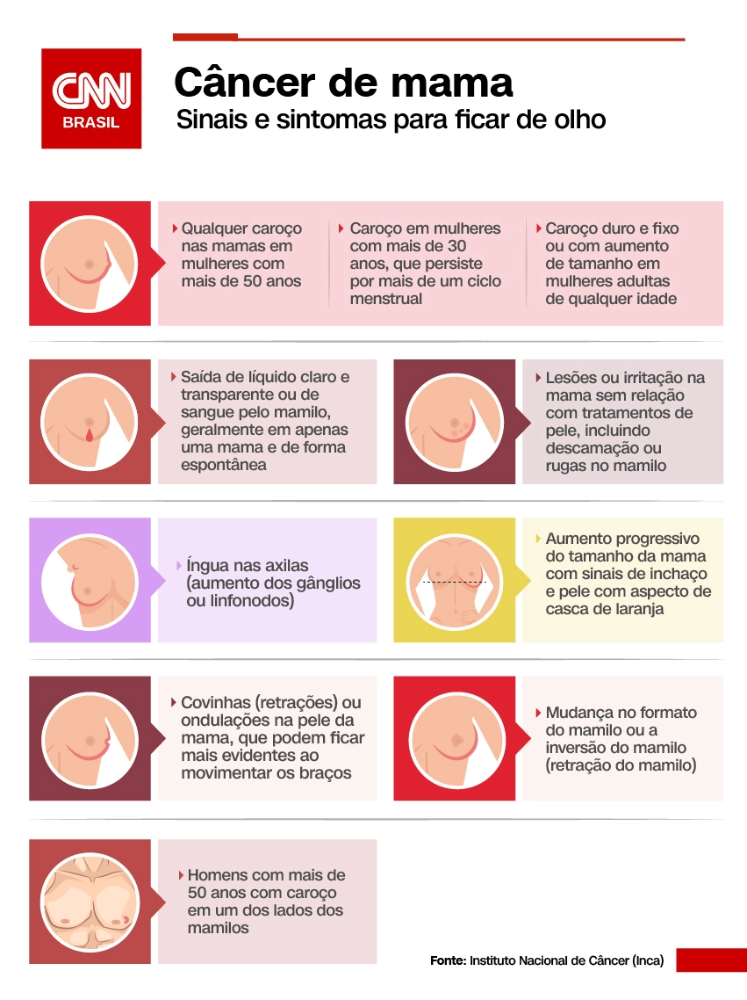

Conheça mais sobre Trantornos Mentais e Como Identificar Cancêr de Mama

Trantornos Mentais:
Os transtornos mentais acometem, em algum momento da vida, ao menos 20% da população mundial. No Brasil, os cuidados com a saúde mental no sistema público sofreram uma reforma que começou há quase 20 anos e que procura evitar as internações em hospitais psiquiátricos, criando mecanismos de diagnóstico e tratamento mais amplos, com equipes multidisciplinares.
Uma pesquisa da Universidade Federal de São Paulo (Unifesp) de 2006 realizada no Serviço de Atendimento Móvel de Urgência (Samu) de Marília, no interior de São Paulo, mostrou que 16% dos pacientes atendidos apresentaram transtornos mentais e do comportamentoUm em cada três casos de câncer pode ser curado se for descoberto logo no início. A doença é caracterizada em diferentes estágios: 0 a IV, sendo o último o mais grave e considerado incurável. Veja algumas informações de tipos de Trastornos Mentais na imagem ao lado esquerdo:
Cancêr de Mama:
O câncer de mama é o tipo que mais afeta mulheres em todo o mundo, tanto em países em desenvolvimento quanto em países desenvolvidos. A cada ano, são registrados cerca de 66 mil novos casos no Brasil, de acordo com estimativas do Instituto Nacional de Câncer (Inca). O agravo ocupa a primeira posição em mortalidade por câncer entre as mulheres no Brasil.
O Ministério da Saúde recomenda a realização da mamografia como método de rastreamento para o câncer de mama, ou seja, exame de rotina, para mulheres sem sinais e sintomas na faixa etária de 50 a 69 anos, a cada dois anos